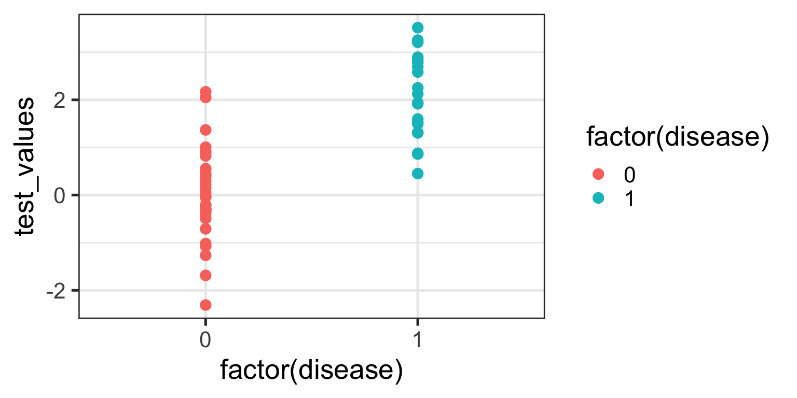
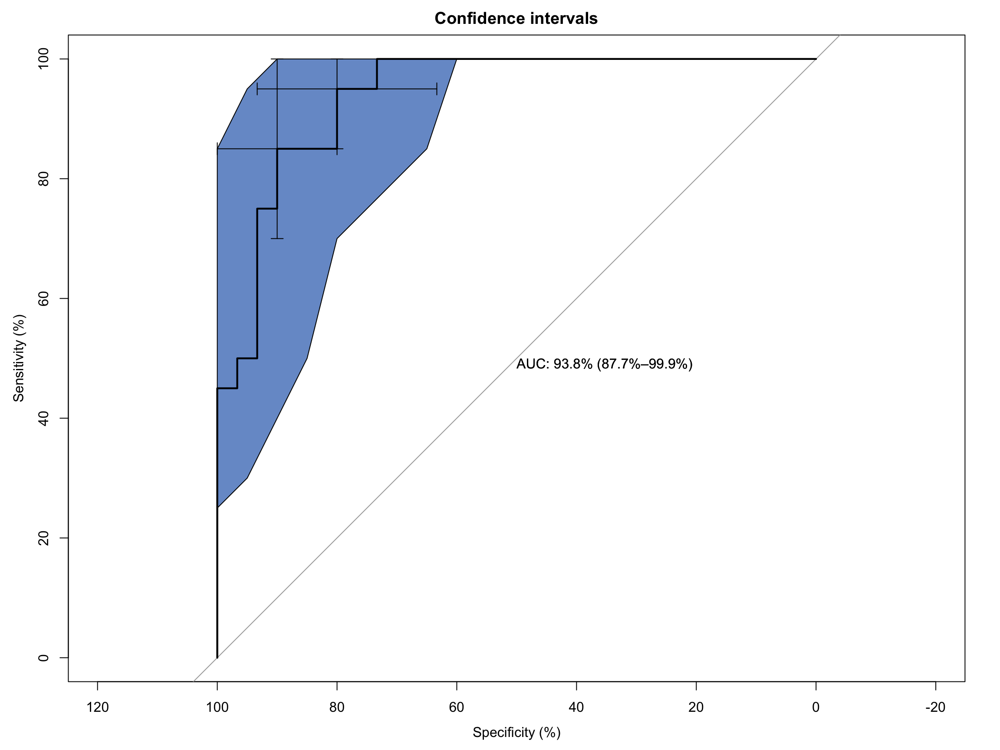

When clinicians or researchers develop a diagnostic test - say, a blood biomarker for detecting a disease - they’re really asking:
“How well does this test distinguish sick from healthy?”
In being able to answer that question, we ultimately care about two things:
Sensitivity — the ability to correctly identify the sick (true positives).
Specificity — the ability to correctly identify the healthy (true negatives).
But diagnostic tests often give a continuous value (e.g., concentration of a biomarker). So we have to choose a threshold: values above are positive and values below are negative. So where should we set this cut-off?
Enter the receiver-operator characteristic (ROC) curve. This is a tool that evaluates how sensitivity and specificity trade off as we vary a test threshold of interest. In addition, the area under the ROC curve gives an idea about the benefit of using the test in question - the greater the area the more accurate the test. In today’s post we’ll talk about ROC curves and how they’re used to aid in clinical-decision making. At first blush the ROC curve can appear quite confusing and difficult to interpret, but I’m hoping by the end of this post I’ll have demystified it enough that you can comfortably employ one in your next diagnostic study.
2 A Bit of History: From Radar to Medicine
Interestingly, ROC curves were first developed during World War II by electrical and radar engineers in the UK. They were trying to distinguish real aircraft returns from noise and clutter on radar screens. The question was essentially the same: given a signal, how do we choose a threshold to decide “target present” vs “target absent” while balancing false alarms and misses? After the war, this framework migrated into signal detection theory and then into statistics and also to multiple areas within medicine. The ROC curve has also been applied in other research fields including biometrics, forecasting of natural hazards, meteorology, model performance assessment, and is increasingly used in machine learning and data mining research. As you can tell, it has wide utility in decision making, but it’s ultimately based on a relatively simple idea.
3 Key Concepts
3.1 The Confusion Matrix (2×2 Table)
At the heart of ROC analysis is the confusion matrix, a simple 2×2 table that compares the results of a diagnostic test against the true disease status. For any chosen threshold that classifies a continuous test result as positive or negative, each individual falls into one of four categories. True positives (TP) are patients who truly have the disease and whose test result is positive, while true negatives (TN) are disease-free individuals correctly identified as negative by the test. Errors arise in two ways: false positives (FP) occur when healthy individuals are incorrectly labelled as having the disease, and false negatives (FN) occur when diseased individuals are missed by the test.
These four quantities form the basis of nearly all diagnostic performance measures. In particular, sensitivity (also called the true positive rate) is the proportion of diseased individuals correctly detected by the test. Specificity is the proportion of non-diseased individuals correctly classified. ROC curves are constructed by repeatedly recalculating these quantities as the decision threshold moves, tracing out how sensitivity increases at the cost of decreasing specificity, for every possible test threshold.
To construct a ROC curve it’s then a relatively simple case of plotting Sensitivity (True Positive Rate) vs False Positive Rate (FPR) at every possible threshold. A perfect test would go straight up the y-axis to 1.0 then straight across with a resulting Area Under Curve (AUC) = 1.0. In contrast, a test no better than chance would follow the diagonal with an AUC = 0.5. In practice, most clinical tests fall somewhere in between.
Let’s illustrate this in practice. I will use the pROC package in R for the analyses in this post, but there are other ROC creation packages available in R, and your mileage will vary depending on what you want. I find pROC fairly simple but if you are after something with a little more flexibility than I would encourage you to also explore the cutpointR package - I know that it offers more options in the calculation of optimal cutpoints. I have not personally used the ROCR package but this is another one that is available for these type of analyses.
4 A Simulated Example
To help you to better understand what a ROC curve is doing in calculations under the hood, I have simulated some data (50 observations) containing a continuous biomarker (test_values) and a binary disease status. Let’s take a look at the first few rows of the simulated data:
Code
library(pROC)library(kableExtra)library(tidyverse)set.seed(123)# Simulate datan <-50# Disease status: 0 = healthy, 1 = diseaseddisease <-rbinom(n, size =1, prob =0.4)# Continuous test: diseased group has higher valuestest_values <-rnorm(n, mean =0+2*disease, sd =1)sim_data <-data.frame(disease, test_values) |>arrange(desc(test_values))# Peek at datahead(sim_data) |>kable(align ="c", digits =2)
disease
test_values
1
3.52
1
3.25
1
3.21
1
2.90
1
2.84
1
2.78
Now, let’s plot these data:
Code
ggplot(sim_data, aes(x =factor(disease), y = test_values)) +geom_point(aes(color =factor(disease))) +theme_bw(base_size =20)

What can you see from this plot? Well, the obvious thing we can appreciate is that if you have this fictitious disease, the biomarker test value tends to be higher compared to if you don’t. Ahhh, you might think - that is a useful characteristic to have if you want the test to be able to discriminate between those with and those without the disease. And you’d be right of course. But you might also be able to appreciate that because there is overlap in test values across disease states, no single test value is going to be 100% accurate.
For the sake of the illustration let’s set an initial test value cut-off (threshold) at 0, like so:
In interpreting this and the following plot, keep in mind the following:
We are diagnosing everyone with a test value ABOVE the red line - regardless of their actual status - as having the disease.
We are calling everyone with a test value BELOW the red line - regardless of their actual status - as being healthy.
With a threshold set at 0 we will correctly identify all of those with the disease, so our true positive rate (TPR) will be 100%, but you’ll note that we will also misclassify about half of those without the disease - our false positive rate (FPR) will be about 50%. Not good enough you might think - we don’t want to diagnose a bunch of people as sick when they’re not, because then we might subject them to unnecessary treatment. Instead, let’s make the cut-off for our biomarker higher and see if that helps.
We no longer correctly identify all those with the disease (TPR = 85%), but we also don’t incorrectly misdiagnose as many healthy individuals either (FPR = 13%). Only clinical judgement can ultimately decide whether this is a more acceptable decision threshold but certainly it better balances misclassification error.
The reason I am showing you these plots is that they form the basis of a ROC curve. If you created such a plot for every test value (threshold) in the dataset, calculating the TPR and FPR in each case (and collating each as a paired set of coordinates), then this is all the information you would need to plot the resulting ROC curve.
4.1 Plotting a ROC Curve by First Principles
Let’s do just that now. I am going to take you through this process step by step to illustrate (and demystify) how a ROC curve is constructed. To make my life a little easier I will use the coords() function in the pROC package to calculate the TPR and FPR at every test value. I will also list the test value itself, as well as disease status an the cumulative number of TP’s and FP’s - these are helpful to understand how the rates are generated. To aid interpretation biomarker test values are first ranked in order from highest to lowest. The resulting data are as follows:
The way to interpret this table is as follows. Each row contains the data for an “independent” set of calculations assuming the test_value in that row were the threshold value decided on for the data. The TP and FP numbers are cumulative counts of individuals who are classified as having the disease regardless of whether they actually do (TP) or don’t (FP). In other words, the test_value in that row indicates the biomarker value whereby ANY test measure equal to OR greater than that, will result in a positive test classification. Let’s pick a few rows out and perform the calculations manually. But before we do that, let’s quickly establish the denominators we need for these calculations - the total numbers of individuals with and without the disease. We can do that with a simple table(sim_data$disease) which tells us that there are 30 healthy individuals and 20 diseased individuals in this fictitious dataset.
Let’s look at the first row of data (id = 1). This contains the highest recorded biomarker level and there is one individual with this value. This individual also happens to have the disease, so they are considered a TP. The TPR is then calculated as 1/20 = 0.05 and the FPR is calculated as 0/30 = 0. This gives us the first point in our ROC curve so let’s plot that:
Now let’s consider the second row of data (id = 2). This individual also happens to have the disease, so they are considered a TP. Our cumulate TP count increases to 2, but our FP count remains unchanged. The TPR is now calculated as 2/20 = 0.1 and the FPR remains as 0/30 = 0. This gives us the second point in our ROC curve so we can now plot both:
Now let’s skip ahead to id = 10 because I hope you’re starting to get a feel for things. This represents our first healthy individual. But because the biomarker value of 2.17 measured for this individual is the new threshold at play, they would be (mis)classified as having the disease. So their count contributes to the cumulative FP and FPR. Thus, the TPR is now calculated as 9/20 = 0.45 and the FPR as 1/30 = 0.03. This gives us the 10th point in our ROC curve, so let’s plot these and all preceding points.
So that’s how you construct a ROC curve manually, but of course there’s no need to do this in practice. There are plenty of functions available to do this automatically for you.
4.2 Plotting a ROC Curve the Easy Way
Computing the ROC curve using the pROC package, is then really quite simple. The first way I will show you is with the out-of-the-box roc plot function that comes with pROC:
As you can see it’s a functional, but no frills plot. We can embellish this, however, by including the 95% C.I.s and some annotation:
Code
# Extended ROC Plot (base R)roc_obj <-plot.roc(sim_data$disease, sim_data$test_values,main ="Confidence intervals", percent =TRUE,ci =TRUE, # compute AUC (of AUC by default)print.auc =TRUE) # print the AUC (will contain the CI)ci_obj <-ci.se(roc_obj, # CI of sensitivityspecificities =seq(0, 100, 5)) # over a select set of specificitiesplot(ci_obj, type ="shape", col ="#1c61b6AA") # plot as a blue shapeplot(ci(roc_obj, of ="thresholds", thresholds ="best")) # add one threshold

There is a second plotting option that leverages ggplot() functionality and while a little bit more coding effort is required, is considerably more flexible. That can generate something like:
Code
# Compute ROC objectroc_obj <-roc(sim_data$disease, sim_data$test_values)# Calculate CI for sensitivity across specificitiesci_obj <-ci.se(roc_obj, specificities =seq(0, 1, 0.05))# Extract CI data for plotting - CONVERT TO 1-SPECIFICITYci_data <-data.frame(fpr =1-as.numeric(rownames(ci_obj)), # 1 - specificitylower = ci_obj[, 1],upper = ci_obj[, 3])# Calculate AUC CIauc_ci <-ci.auc(roc_obj)# Create labelauc_label <-paste0("AUC = ", round(auc(roc_obj), 3),"\n95% CI: ", round(auc_ci[1], 3), " - ", round(auc_ci[3], 3))# Find optimal threshold (Youden's index)best_coords <-coords(roc_obj, "best", ret =c("threshold", "sensitivity", "specificity"))# Plotggroc(roc_obj, legacy.axes =TRUE) +geom_ribbon(data = ci_data, aes(x = fpr, ymin = lower, ymax = upper), # Use fpr (1-specificity)fill ="#1c61b6AA", alpha =0.3, inherit.aes =FALSE) +annotate("point", x =1- best_coords$specificity, y = best_coords$sensitivity, # Convert here toosize =3, color ="red") +annotate("text", x =0.75, y =0.5, label = auc_label, hjust =0) +annotate("text", x =1- best_coords$specificity +0.12, # Adjust positiony = best_coords$sensitivity -0.06,label =paste("Threshold =", round(best_coords$threshold, 2))) +xlab("FPR (1 - Specificity)") +ylab("TPR (Sensitivity)") +theme_bw(base_size =20)
That looks even nicer to my eye. In this plot I have also included and annotated the optimal threshold(s) based on the Youden index - a popular statistic for evaluating ROC performance. In this case there are two (equivalent) optimum thresholds at each of biomarker values 0.84 and 1.16. Remember when I said earlier that a test value of 1 might count for a sensible threshold…
4.3 Other Bits and Pieces
I mentioned the Youden Index above. If this is something you’re after it’s simple to extract this as follows:
Code
# Get optimal cutpoint based on youden Indexcoords(roc_obj, x ="best", best.method ="youden") |>kable(align ="c", digits =2)
threshold
specificity
sensitivity
0.84
0.8
0.95
1.16
0.9
0.85
And likewise, for the AUC:
Code
# Get AUCauc(roc_obj)
Area under the curve: 0.9383
5 Wrap-Up
I hope I’ve shown you how ROC curves are a foundational tool in clinical decision analytics. But as importantly I hope I’ve given you some insight into how they are created. Understanding the calculations underlying their visualisation will place you in better stead for interpreting a ROC curve in the broader clinical context of your patient’s care.
Until next month…
Source Code
---title: "ROC Curves in Clinical Decision-Making: A Gentle Introduction"date: 2026-04-24categories: [concept, code]image: "images/roc.png"description: "What they are and how they're used."---## IntroductionWhen clinicians or researchers develop a diagnostic test - say, a blood biomarker for detecting a disease - they’re really asking:> "How well does this test distinguish sick from healthy?"In being able to answer that question, we ultimately care about two things:- **Sensitivity** — the ability to correctly identify the sick (true positives).- **Specificity** — the ability to correctly identify the healthy (true negatives).But diagnostic tests often give a continuous value (e.g., concentration of a biomarker). So we have to choose a threshold: values above are positive and values below are negative. So where should we set this cut-off?Enter the receiver-operator characteristic (ROC) curve. This is a tool that evaluates how **sensitivity and specificity trade off as we vary a test threshold of interest**. In addition, the area under the ROC curve gives an idea about the benefit of using the test in question - the greater the area the more accurate the test. In today's post we'll talk about ROC curves and how they're used to aid in clinical-decision making. At first blush the ROC curve can appear quite confusing and difficult to interpret, but I'm hoping by the end of this post I'll have demystified it enough that you can comfortably employ one in your next diagnostic study.------------------------------------------------------------------------## A Bit of History: From Radar to MedicineInterestingly, ROC curves were first developed during World War II by electrical and radar engineers in the UK. They were trying to distinguish real aircraft returns from noise and clutter on radar screens. The question was essentially the same: given a signal, how do we choose a threshold to decide "target present" vs "target absent" while balancing false alarms and misses? After the war, this framework migrated into signal detection theory and then into statistics and also to multiple areas within medicine. The ROC curve has also been applied in other research fields including biometrics, forecasting of natural hazards, meteorology, model performance assessment, and is increasingly used in machine learning and data mining research. As you can tell, it has wide utility in decision making, but it's ultimately based on a relatively simple idea.------------------------------------------------------------------------## Key Concepts### The Confusion Matrix (2×2 Table)At the heart of ROC analysis is the confusion matrix, a simple 2×2 table that compares the results of a diagnostic test against the true disease status. For any chosen threshold that classifies a continuous test result as positive or negative, each individual falls into one of four categories. True positives (TP) are patients who truly have the disease and whose test result is positive, while true negatives (TN) are disease-free individuals correctly identified as negative by the test. Errors arise in two ways: false positives (FP) occur when healthy individuals are incorrectly labelled as having the disease, and false negatives (FN) occur when diseased individuals are missed by the test.These four quantities form the basis of nearly all diagnostic performance measures. In particular, sensitivity (also called the true positive rate) is the proportion of diseased individuals correctly detected by the test. Specificity is the proportion of non-diseased individuals correctly classified. ROC curves are constructed by repeatedly recalculating these quantities as the decision threshold moves, tracing out how sensitivity increases at the cost of decreasing specificity, **for every possible test threshold**.| | **Disease Present** | **Disease Absent** ||-------------------|---------------------|---------------------|| **Test Positive** | True Positive (TP) | False Positive (FP) || **Test Negative** | False Negative (FN) | True Negative (TN) |<br>So from this simple table, we calculate:- Sensitivity (True Positive Rate) = TP / (TP + FN)- Specificity = TN / (TN + FP)- False Positive Rate = 1 – Specificity = FP / (FP + TN)### ROC CurveTo construct a ROC curve it's then a relatively simple case of plotting Sensitivity (True Positive Rate) vs False Positive Rate (FPR) at every possible threshold. A perfect test would go straight up the y-axis to `1.0` then straight across with a resulting Area Under Curve (AUC) = `1.0`. In contrast, a test no better than chance would follow the diagonal with an AUC = `0.5`. In practice, most clinical tests fall somewhere in between.Let's illustrate this in practice. I will use the `pROC` package in `R` for the analyses in this post, but there are other ROC creation packages available in `R`, and your mileage will vary depending on what you want. I find `pROC` fairly simple but if you are after something with a little more flexibility than I would encourage you to also explore the `cutpointR` package - I know that it offers more options in the calculation of optimal cutpoints. I have not personally used the `ROCR` package but this is another one that is available for these type of analyses.## A Simulated ExampleTo help you to better understand what a ROC curve is doing in calculations under the hood, I have simulated some data (`50` observations) containing a continuous biomarker (`test_values`) and a binary `disease` status. Let's take a look at the first few rows of the simulated data:```{r setup, include=FALSE}knitr::opts_chunk$set( echo = TRUE, message = FALSE, warning = FALSE)``````{r}library(pROC)library(kableExtra)library(tidyverse)set.seed(123)# Simulate datan <-50# Disease status: 0 = healthy, 1 = diseaseddisease <-rbinom(n, size =1, prob =0.4)# Continuous test: diseased group has higher valuestest_values <-rnorm(n, mean =0+2*disease, sd =1)sim_data <-data.frame(disease, test_values) |>arrange(desc(test_values))# Peek at datahead(sim_data) |>kable(align ="c", digits =2)```Now, let's plot these data:```{r, fig.width=8, fig.height=4, out.width="80%"}ggplot(sim_data, aes(x = factor(disease), y = test_values)) + geom_point(aes(color = factor(disease))) + theme_bw(base_size = 20)```What can you see from this plot? Well, the obvious thing we can appreciate is that if you have this fictitious disease, the biomarker test value tends to be higher compared to if you don't. Ahhh, you might think - that is a useful characteristic to have if you want the test to be able to discriminate between those with and those without the disease. And you'd be right of course. But you might also be able to appreciate that because there is overlap in test values across disease states, no single test value is going to be `100%` accurate.For the sake of the illustration let's set an initial test value cut-off (threshold) at `0`, like so:```{r, fig.width=8, fig.height=4, out.width="80%"}ggplot(sim_data, aes(x = factor(disease), y = test_values)) + geom_point(aes(color = factor(disease))) + geom_hline(color = "red", yintercept = 0) + theme_bw(base_size = 20)```In interpreting this and the following plot, keep in mind the following:> We are diagnosing everyone with a test value ABOVE the red line - regardless of their actual status - as having the disease.> We are calling everyone with a test value BELOW the red line - regardless of their actual status - as being healthy.With a threshold set at `0` we will correctly identify *all* of those with the disease, so our true positive rate (TPR) will be `100%`, but you'll note that we will also misclassify about half of those without the disease - our false positive rate (FPR) will be about `50%`. Not good enough you might think - we don't want to diagnose a bunch of people as sick when they're not, because then we might subject them to unnecessary treatment. Instead, let's make the cut-off for our biomarker higher and see if that helps.So now we raise the cut-off to `1`:```{r, fig.width=8, fig.height=4, out.width="80%"}ggplot(sim_data, aes(x = factor(disease), y = test_values)) + geom_point(aes(color = factor(disease))) + geom_hline(color = "red", yintercept = 1) + theme_bw(base_size = 20)```We no longer correctly identify all those with the disease (TPR = `85%`), but we also don't incorrectly misdiagnose as many healthy individuals either (FPR = `13%`). Only clinical judgement can ultimately decide whether this is a more acceptable decision threshold but certainly it better balances misclassification error.The reason I am showing you these plots is that they form the basis of a ROC curve. If you created such a plot for every test value (threshold) in the dataset, calculating the TPR and FPR in each case (and collating each as a paired set of coordinates), then this is all the information you would need to plot the resulting ROC curve.### Plotting a ROC Curve by First PrinciplesLet's do just that now. I am going to take you through this process step by step to illustrate (and demystify) how a ROC curve is constructed. To make my life a little easier I will use the `coords()` function in the `pROC` package to calculate the TPR and FPR at every test value. I will also list the test value itself, as well as disease status an the cumulative number of TP's and FP's - these are helpful to understand how the rates are generated. To aid interpretation biomarker test values are first ranked in order from highest to lowest. The resulting data are as follows:```{r}# Compute ROC objectroc_obj <-roc(sim_data$disease, sim_data$test_values)# Calculate threshold datacoord_data <-coords(roc_obj, ret =c("threshold", "tp", "fp", "tpr", "fpr"))# Merge in simulated datacoord_data <- coord_data |>arrange(desc(threshold)) |>slice(-1)coord_data <-cbind(coord_data, sim_data) |>mutate(id =row_number()) |>select(id, test_values, disease, tp, fp, tpr, fpr)# Printcoord_data |>kable(align ="c", digits =2)```The way to interpret this table is as follows. Each row contains the data for an "independent" set of calculations assuming the `test_value` in that row were the threshold value decided on for the data. The TP and FP numbers are cumulative counts of individuals who are classified as having the disease regardless of whether they actually do (TP) or don't (FP). In other words, the `test_value` in that row **indicates the biomarker value whereby ANY test measure equal to OR greater than that, will result in a positive test classification**. Let's pick a few rows out and perform the calculations manually. But before we do that, let's quickly establish the denominators we need for these calculations - the total numbers of individuals with and without the disease. We can do that with a simple `table(sim_data$disease)` which tells us that there are `30` healthy individuals and `20` diseased individuals in this fictitious dataset.Let's look at the first row of data (`id` = `1`). This contains the highest recorded biomarker level and there is one individual with this value. This individual also happens to have the disease, so they are considered a TP. The TPR is then calculated as `1/20 = 0.05` and the FPR is calculated as `0/30 = 0`. This gives us the first point in our ROC curve so let's plot that:```{r, fig.width=8, fig.height=6, out.width="80%"}coord_data |> slice(1) |> ggplot(aes(fpr, tpr)) + geom_point(size = 3) + xlab("FPR (1 - Specificity)") + ylab("TPR (Sensitivity)") + scale_x_continuous(limits = c(0, 1), breaks = seq(0, 1, by = 0.2)) + scale_y_continuous(limits = c(0, 1), breaks = seq(0, 1, by = 0.2)) + theme_bw(base_size = 20)```Now let's consider the second row of data (`id` = `2`). This individual also happens to have the disease, so they are considered a TP. Our cumulate TP count increases to `2`, but our FP count remains unchanged. The TPR is now calculated as `2/20 = 0.1` and the FPR remains as `0/30 = 0`. This gives us the second point in our ROC curve so we can now plot both:```{r, fig.width=8, fig.height=6, out.width="80%"}coord_data |> slice(1:2) |> ggplot(aes(fpr, tpr)) + geom_point(size = 3) + xlab("FPR (1 - Specificity)") + ylab("TPR (Sensitivity)") + scale_x_continuous(limits = c(0, 1), breaks = seq(0, 1, by = 0.2)) + scale_y_continuous(limits = c(0, 1), breaks = seq(0, 1, by = 0.2)) + theme_bw(base_size = 20)```Now let's skip ahead to `id` = `10` because I hope you're starting to get a feel for things. This represents our first healthy individual. But because the biomarker value of `2.17` measured for this individual is the new threshold at play, they would be (mis)classified as having the disease. So their count contributes to the cumulative FP and FPR. Thus, the TPR is now calculated as `9/20 = 0.45` and the FPR as `1/30 = 0.03`. This gives us the 10th point in our ROC curve, so let's plot these and all preceding points.```{r, fig.width=8, fig.height=6, out.width="80%"}coord_data |> slice(1:10) |> ggplot(aes(fpr, tpr)) + geom_point(size = 3) + xlab("FPR (1 - Specificity)") + ylab("TPR (Sensitivity)") + scale_x_continuous(limits = c(0, 1), breaks = seq(0, 1, by = 0.2)) + scale_y_continuous(limits = c(0, 1), breaks = seq(0, 1, by = 0.2)) + theme_bw(base_size = 20)```We can do the same for the first `20` observations:```{r, fig.width=8, fig.height=6, out.width="80%"}coord_data |> slice(1:20) |> ggplot(aes(fpr, tpr)) + geom_point(size = 3) + xlab("FPR (1 - Specificity)") + ylab("TPR (Sensitivity)") + scale_x_continuous(limits = c(0, 1), breaks = seq(0, 1, by = 0.2)) + scale_y_continuous(limits = c(0, 1), breaks = seq(0, 1, by = 0.2)) + theme_bw(base_size = 20)```and all observations:```{r, fig.width=8, fig.height=6, out.width="80%"}coord_data |> ggplot(aes(fpr, tpr)) + geom_point(size = 3) + xlab("FPR (1 - Specificity)") + ylab("TPR (Sensitivity)") + scale_x_continuous(limits = c(0, 1), breaks = seq(0, 1, by = 0.2)) + scale_y_continuous(limits = c(0, 1), breaks = seq(0, 1, by = 0.2)) + theme_bw(base_size = 20)```So that's how you construct a ROC curve manually, but of course there's no need to do this in practice. There are plenty of functions available to do this automatically for you. ### Plotting a ROC Curve the Easy WayComputing the ROC curve using the `pROC` package, is then really quite simple. The first way I will show you is with the out-of-the-box roc plot function that comes with `pROC`:```{r}# Compute ROC objectroc_obj <-roc(sim_data$disease, sim_data$test_values)# Basic ROC Plotplot(roc_obj)```As you can see it's a functional, but no frills plot. We can embellish this, however, by including the 95% C.I.s and some annotation:```{r}# Extended ROC Plot (base R)roc_obj <-plot.roc(sim_data$disease, sim_data$test_values,main ="Confidence intervals", percent =TRUE,ci =TRUE, # compute AUC (of AUC by default)print.auc =TRUE) # print the AUC (will contain the CI)ci_obj <-ci.se(roc_obj, # CI of sensitivityspecificities =seq(0, 100, 5)) # over a select set of specificitiesplot(ci_obj, type ="shape", col ="#1c61b6AA") # plot as a blue shapeplot(ci(roc_obj, of ="thresholds", thresholds ="best")) # add one threshold```There is a second plotting option that leverages `ggplot()` functionality and while a little bit more coding effort is required, is considerably more flexible. That can generate something like:```{r}# Compute ROC objectroc_obj <-roc(sim_data$disease, sim_data$test_values)# Calculate CI for sensitivity across specificitiesci_obj <-ci.se(roc_obj, specificities =seq(0, 1, 0.05))# Extract CI data for plotting - CONVERT TO 1-SPECIFICITYci_data <-data.frame(fpr =1-as.numeric(rownames(ci_obj)), # 1 - specificitylower = ci_obj[, 1],upper = ci_obj[, 3])# Calculate AUC CIauc_ci <-ci.auc(roc_obj)# Create labelauc_label <-paste0("AUC = ", round(auc(roc_obj), 3),"\n95% CI: ", round(auc_ci[1], 3), " - ", round(auc_ci[3], 3))# Find optimal threshold (Youden's index)best_coords <-coords(roc_obj, "best", ret =c("threshold", "sensitivity", "specificity"))# Plotggroc(roc_obj, legacy.axes =TRUE) +geom_ribbon(data = ci_data, aes(x = fpr, ymin = lower, ymax = upper), # Use fpr (1-specificity)fill ="#1c61b6AA", alpha =0.3, inherit.aes =FALSE) +annotate("point", x =1- best_coords$specificity, y = best_coords$sensitivity, # Convert here toosize =3, color ="red") +annotate("text", x =0.75, y =0.5, label = auc_label, hjust =0) +annotate("text", x =1- best_coords$specificity +0.12, # Adjust positiony = best_coords$sensitivity -0.06,label =paste("Threshold =", round(best_coords$threshold, 2))) +xlab("FPR (1 - Specificity)") +ylab("TPR (Sensitivity)") +theme_bw(base_size =20)```That looks even nicer to my eye. In this plot I have also included and annotated the optimal threshold(s) based on the [Youden index](https://en.wikipedia.org/wiki/Youden%27s_J_statistic) - a popular statistic for evaluating ROC performance. In this case there are two (equivalent) optimum thresholds at each of biomarker values `0.84` and `1.16`. Remember when I said earlier that a test value of `1` might count for a sensible threshold...### Other Bits and PiecesI mentioned the Youden Index above. If this is something you're after it's simple to extract this as follows:```{r}# Get optimal cutpoint based on youden Indexcoords(roc_obj, x ="best", best.method ="youden") |>kable(align ="c", digits =2)```And likewise, for the AUC:```{r}# Get AUCauc(roc_obj)```## Wrap-UpI hope I've shown you how ROC curves are a foundational tool in clinical decision analytics. But as importantly I hope I've given you some insight into how they are created. Understanding the calculations underlying their visualisation will place you in better stead for interpreting a ROC curve in the broader clinical context of your patient's care.Until next month...